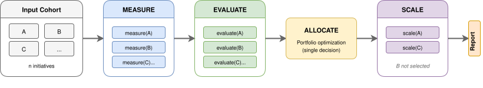
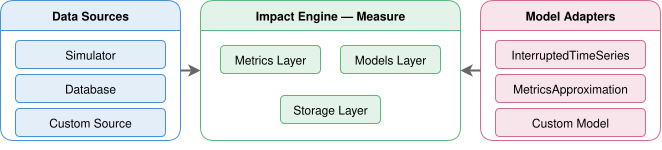

Impact Engine — System
Science that stays in notebooks doesn't scale. The architecture behind Impact Engine turns methodology into infrastructure — independently deployable, config-driven, and built through agent-driven development.
Pipeline Design — How is it wired?

Fan out per initiative, fan in at the decision boundary, fan back out for the winners.
The pipeline fans out measurements and evidence scoring in parallel — one call per initiative — then synchronizes at the allocation boundary where all results are needed to make a single portfolio decision. Selected initiatives fan back out for scaled deployment.

 Impact Engine — Orchestrator
Impact Engine — Orchestrator
The Impact Engine — Orchestrator owns the wiring: the component registry, the config loader, and the fan-out/fan-in execution model. Four independent packages, each with its own repository and CI pipeline, are connected into a single run by one YAML config file.
Extension Points — How does it extend?
Every stage follows the same internal pattern: external libraries
sit behind thin adapters that self-register with a registry.
Adding a new causal model, decision rule, or scoring function means
one new class, zero pipeline changes. Components communicate through
plain dict boundaries — no cross-package type imports,
no shared base classes — so each package is independently deployable
and testable.

The Measure component illustrates the pattern: four registries, each with a Custom slot. Evaluate and Allocate follow the same structure.
Agentic Support — How is it built?
The entire ecosystem is built through agent-driven development with
Claude Code.
Every repo carries a hierarchical CLAUDE.md that encodes
the dependency graph, naming conventions, interface contracts, and
verification protocols. A workspace-level file propagates shared rules
to all components; each repo layers its own architecture and design
decisions on top. When Claude Code opens any package, it reads these
constraints before touching a single file — the conventions are not
documentation to remember but runtime instructions the agent follows.
Shared skills handle cross-repo workflows like convention auditing,
package scaffolding, and config synchronization. The result is an
ecosystem where every commit — across four independent repositories —
passes lint, tests, and pre-commit hooks before it lands, whether a
human or an AI made the change.
Further Reading
Pipeline Design
G. Hohpe & B. Woolf — Enterprise Integration Patterns: Designing, Building, and Deploying Messaging Solutions (2003)
M. Kleppmann — Designing Data-Intensive Applications (2017)
Extension Points
E. Gamma, R. Helm, R. Johnson & J. Vlissides — Design Patterns: Elements of Reusable Object-Oriented Software (1994)
M. Fowler — Patterns of Enterprise Application Architecture (2002)
Agentic Support
Anthropic — Building Effective Agents (Anthropic Blog, 2024)
R. Jansen — Agent-Driven Development: The Next Paradigm Shift in Software Engineering (DEV Community, 2025)